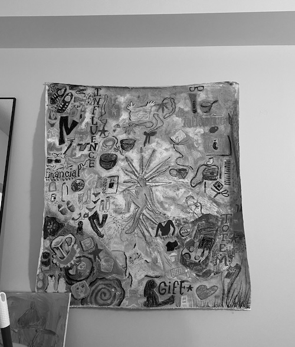
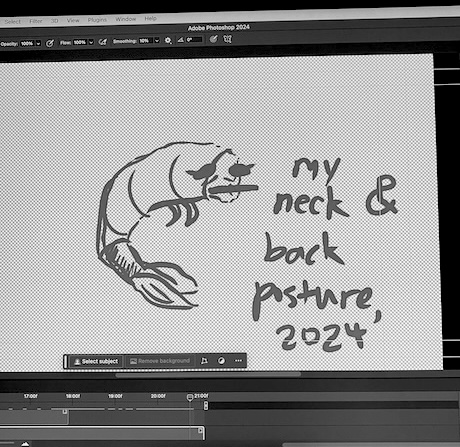
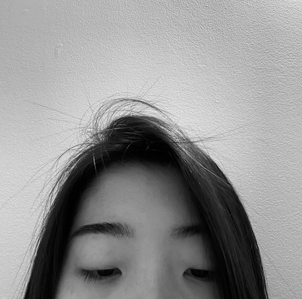
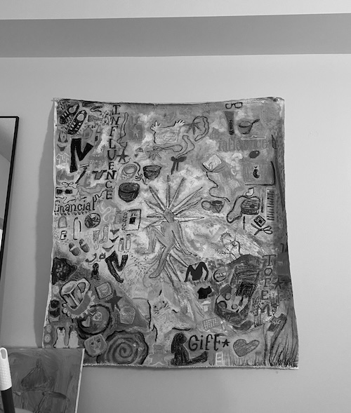
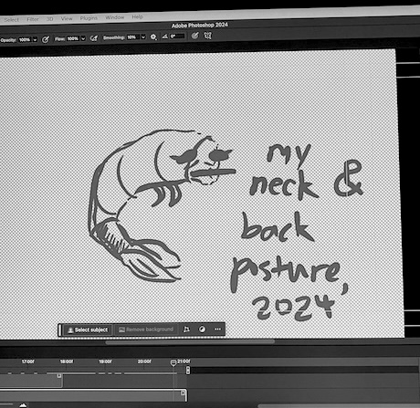
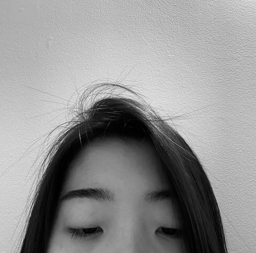

note the word "before".
right now, i am sitting in the communal room of my suite. the kitchen is to the left of me, a mural on canvas painted by one of my suitemates hanging on the right. it is currently 2:57 A.M. this is the standard time that i should be sleeping instead of typing this. but i digress, because i don't sleep and my usual sleeping time ranges from 5 AM to never. i sit on a (very) uncomfortable chair in front of two square-shaped dining tables that have seen better days. my back curls like an unpeeled shrimp. i bite my tongue and it hurts but i keep doing it because i collect bad habits at a faster rate than bottle caps (although there is a correlation between the two. trust me on this). i blink and my eyes scream in agony for me to sleep (but i know that if i do, i will oversleep and cry in my pillow for being so stupid and so tired).
is to the left of me, a mural on canvas painted by one of my suitemates hanging on the right. it is currently 2:57 A.M. this is the standard time that i should be sleeping instead of typing this. but i digress, because i don't sleep and my usual sleeping time ranges from 5 AM to never. i sit on a (very) uncomfortable chair in front of two square-shaped dining tables that have seen better days. my back curls like an unpeeled shrimp. i bite my tongue and it hurts but i keep doing it because i collect bad habits at a faster rate than bottle caps (although there is a correlation between the two. trust me on this). i blink and my eyes scream in agony for me to sleep (but i know that if i do, i will oversleep and cry in my pillow for being so stupid and so tired).
{kind=link}
{kind=link}
{kind=link}
i'm horrible during finals. i feel the life draining from me as i am typing this. a sliver of it that i didn't know i still had. i am falling apart. i am weightless and heavy at the same time. i am behind on my work in several classes. i am behind on my work outside of school (thankfully my boss is nice and understands, nodding with a smile as i apologetically explain through a zoom screen why i can't finish my current assigned project before the end of this week). i am behind.
how did i get to this point? i was ok before. at least, only a few months ago.